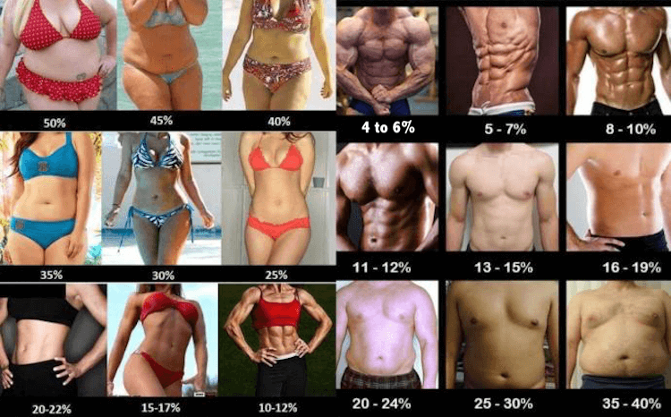

Body Fat Percentage Pictures of Male and Female (with analysis)
Body fat is essential for survival; however, excess body fat prevents the body from performing at its peak.
Being overweight is a precursor to many chronic diseases. Long gone are the days where being overweight was seen as a sign
of prosperity (maybe in a few developing countries this still holds true).
The American Council on Exercise has categorized body fat percentages for men and women into 5 separate categories. It is important to remember that these categories are broad generalizations.
Living a healthy lifestyle
and being a little overweight is still considerably better than having the body fat percentage of a performance athlete but living off junk food, alcohol and cigarettes.
| Description | Men (%) |
Women (%) |
|---|---|---|
| Essential fat | 3–5 | 10–13 |
| Athletes | 6–13 | 14–20 |
| Fitness | 14–17 | 21–24 |
| Average | 18–24 | 25–31 |
| Obese | 25+ | 32+ |
Source: American Council on Exercise
Going for an annual physical check-up with your family doctor is a great way to keep a tab on your overall health. Also, if you are interested in finding our your body fat percentage, check out our body fat percentage calculator. It's free and very simple to use.
To get a better understanding of physique, let’s see how the human body looks and feels with different body fat percentages on men and women.

Image Source: Imgur
A. Male
1. Body Fat Percentage under 7%
Trying to maintain a body fat percentage of less than 7% is not only extremely difficult, but also very unhealthy (considering the body needs at least 3-5% of fat just to survive). However, professional bodybuilders and fitness models sometimes achieve
this prior to shows/shoots.
With sub 7% body fat, there is a clear vascularity (appearance of veins) between the muscles, an 8 pack of abdominal muscles (abs), and striations (lines) visible across different muscles.
While this body fat percentage may be aesthetically pleasing to some people, it is practically impossible to maintain for the long-term, let alone live with on a daily basis.
This level of body fat percentage is usually
achieved with the help of anabolic steroids, extremely strict diets, and dehydration. Also, being at an extremely low body fat percentage can negatively affect sex drive as it leads to a fall in testosterone levels.
2. Body Fat Percentage between 10% and 12%
This body fat range is safe, sustainable, and presents you in the best light possible. Your body is defined, there is a clear separation between the different muscles, and it is generally perceived as being the most attractive to the opposite sex.
This makes sense when you think about it from an evolutionary perspective.
A diet low in refined carbohydrates and frequent exercise can help anyone achieve and maintain this range of body fat percentage.
Think of Daniel
Craig (James Bond) in Casino Royale. That is what a 10 to 12 body fat percentage looks like. If you are thinking of bulking up (gaining muscle), most fitness professionals recommend aiming for this body fat range.
3. Body Fat Percentage between 14% and 17%
In this range, you have a muscular look without firm abs or vascular arms. You look well-defined in a t-shirt but you may not have the tone you desire when you take it off.
However, if you’ve been overweight your whole life and
have recently lost a considerable amount of fat, your body will definitely have a brand new look. It will be noticeable to friends and family.
This is a prelude to a four/six pack, abs not beer :). So, don’t give up just yet. And
beware, this is often the range where many men stop following their healthy diet and exercise plan and fall back into their old habits that made them overweight in the first place.
4. Body Fat Percentage around 20%
Say goodbye to vascularity at this stage. Think of it as the stocky powerlifter look (if you are muscled) with a belly. Men that are under muscled and overweight tend to be skinny fat at this stage, which is the worst possible look.
To
break the skinny fat mould, it is best to focus on body weight exercises like push ups and chin ups to build strength, while at the same time eating a diet very low in refined carbohydrates.
A strict diet for a couple of months
combined with an exercise routine can definitely bring down your body fat percentage to 12%, no matter your body type.
5. Body Fat Percentage between 25% and 30%
The waist starts protruding at this point as this is the excess fat category. This range is where there is no separation between the muscles at all. Your face looks puffy and you most likely develop a double chin.
On the other
hand, if you’ve been obese your whole life and have been making changes to your diet and lifestyle, this is the range where people will start noticing a change.
Baggy clothing may conceal the fact that you’re still overweight,
but if you wear a well-fitted t-shirt, it will be rather obvious.
6. Body Fat Percentage above 30%
When the body fat exceeds 30 percent, men enter the high-risk category. In most cases, the waist-to-hip ratio is greater than 1 and the gut is noticeable nomatter the clothes you wear.
There is no muscle separation whatsoever,
and this is usually the stage where losing fat is necessary not just for aesthetic reasons but for health reasons.
7. Body Fat Percentage above 35%
Making any positive change to your diet and lifestyle at this stage will have a positive effect on your overall health. The waist-to-hip ratio is far above 1 and so are the risks of cardiovascular diseases, diabetes, stroke, etc.
The
android fat distribution (fat surrounding the waist) is very dominant at this stage, and if you want to lead a healthy and happy life, a radical change in your diet is needed.
8. Body Fat Percentage above 40%
Basic everyday activities like walking, bending, playing sports, etc., become difficult at this point. The waist-to-hip ratio is considerably higher than 1 with all the risks listed in the section above.
At this range, you qualify
as obese and losing fat is imperative if you want a long and healthy life. Sticking to a low-carb high-fat diet for even 30 days may produce marvellous results.
Do not give up. If you stick with your plan, within 3 months, you’ll
feel like a brand new person. The human body is very malleable. Always remember that.
A. Female
1. Body Fat Percentage between 13% and 15%
This range in body fat percentage is attained by some female bodybuilders prior to a show. It sits a few percentage points above the essential body fat percentage level. As such, it is unsustainable over the long run.
Female bodies
require more body fat to function, and women at this range of body fat may even stop menstruating due to the lack of fat. Just like male bodybuilders prior to a show, striations (lines) are visible across different muscles and there is
a clear separation between the muscles.
2. Body Fat Percentage between 15% and 17%
At this body fat level, there is still clear separation between different muscles and some vascularity is visible.
Fitness models usually hover in this body fat range. Some athletes also maintain this body fat percentage. This
is still a very low body fat level for women to consistently maintain without intensive exercise and a very strict diet.
3. Body Fat Percentage between 19% and 22%
Athletes tend to hover around this body fat range. There isn’t much natural curviness at this range as the body fat tends to be minimal.
It becomes very apparent from just the woman’s appearance that she maintains a healthy diet.
There is a clear separation between the muscles, although not as defined as the previous ranges.
4. Body Fat Percentage above 25%
Women at this body fat range look neither too skinny, nor overweight. Health warning bells haven't gone off just yet.
A well-balanced diet and lifestyle can keep you healthy in this range. Compared to previous body fat ranges,
fat in the buttocks and hips may be more evident.
It presents more of the curvy hourglass look that is appealing to the majority of men. The accumulation of fat in these areas is not as serious in terms of healthy as the accumulation
of fat in the stomach region.
5. Body Fat Percentage above 30%
This range in body fat percentage is more on the larger side of the hour glass image. There is more accumulation of fat in the hips and buttocks. Compared to men, women can still maintain a flat stomach without accumulation of abdominal fat at this range.
However, this range does indicate you are carrying excess body fat that should be worked off. If the stomach starts accumulating excess body fat, this should be taken as a sign that something needs to be done about it, i.e., lifestyle
change consisting of diet and exercise.
6. Body Fat Percentage above 35%
There is a dramatic increase in the waist, thighs, and hips of women in this body fat range. The belly appears flabby and may even dangle out. A waist-to-hip ratio exceeding 0.8 could be problematic.
Excess body fat in the hip
region in women can increase the risk of venous thromboembolism or dangerous blood clots in the veins.
However, a diet high in fat and low in carbohydrates
can produce marvellous results if you stay with it for 3 months. A new workout program accompanying the healthy diet can help accelerate the progress towards a healthier body fat range.
7. Female - Body Fat Percentage above 40%
Having body fat above 40% is a clear sign that something needs to be done in terms of diet and lifestyle. None of the website's content is meant to be taken as medical advice. Speak to your healthcare professional for medical advice Special thanks goes out to Rachel Thomas and Jeremy Howard from Fast A.I. without whom this web application would not be possible. This application is built based on Jeremy's Bear Classifier WebApp.
If you are interested in learning about Deep Learning and how you can use AI in your projects, Fast AI holds free courses anyone can take on their website. Please do give them a look if you are curious.
At this stage, the waist, hips and thighs take on most of the extra fat and almost certainly make even everyday activities
uncomfortable. Just like men in the 40% body fat range, tasks like walking, bending, moving things, and playing with your children become a chore.
Also, like the previous range, excess body fat in hips can increase the risk of
venous thromboembolism or dangerous blood clots in the veins. At this stage, simple changes in diet can work some magic for overall health and well-being.
It is certainly possible to feel like a completely new person in just three
months by sticking to a new eating plan.
Sources: Body Fat Percentage
Disclaimer
I Lov Guitars Inc. will not be held liable for any claim, damage or other liability arising from,
out, or in connection with using this web application and its content.
As a way of generating revenue to sustain this web app, estimatebodyfat.com is a member of Amazon’s Affiliate program and Clickbank's Affiliate Program
and may earn a commission if you decide to buy any of the products recommended.
Credits
In addition to Fast
A.I., this web application also uses the Croppie Plugin and custom made Haar Cascades .
I would
also like to thank Dr. Jason Fung for writing such a life-changing book on solving Obesity and Harrison's Free tutorials on Haar Cascades
Images used on Estimate Body Fat have been obtained from Royalty Free Sites or purchased from Stock Repositories.
If you notice a discrepancy with anything, feel
free to send me a message at contact@estimatebodyfat.com